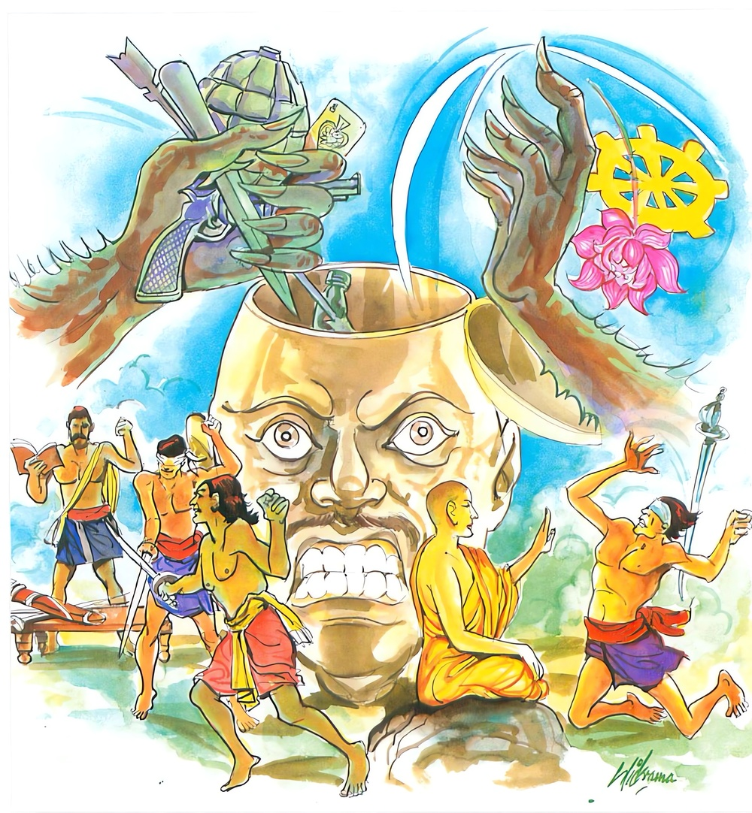

5-13 තෙළෙස්වන සට්ඨිකුට ප්රේතවස්තුවයි.
මෙම කතාව සද්ධර්ම සාගරයෙන් ද කියවන්න.
යාවදෙව අනත්ථාය ඤත්තං බාලස්ස ජායති
හන්ති බාලස්ස සුක්කංසං මුද්ධමස්ස විපාතයං
අඥානයා විසින් දන්නා ලද ශිල්පය හෝ ඔහුගේ ඉසුරුබව ඒ බාලයාහට අවැඩ පිණිස ම වන්නේ ය. එය බාලයාගේ ප්රඥා නැමැති හිස පළමින් ඔහුගේ කුසල් කොටස නසයි.

යාවදෙව අනත්ථාය ආදි මේ ධර්මදේශනාව බුදුන් දෙව්රම වැඩවාසයකරන කාලයෙහි සට්ඨිකූට නම් ප්රේතයා අරභයා දේශනා කළසේක. පෙරකී පරිද්දෙන්ම මහමුගලන් තෙරණුවෝ ලක්ඛණ තෙරණුවන් සමග ගිජුකුළු පව්වෙන් බසින විට එක්තරා ප්රදේශයකදී සිනා පහළකළහ. සිනාසීමට කරුණු විචාළකල බුදුන් ළඟදී ඒ ප්රශ්නය මගෙන් අසන්නැයි කියා පිඬු සිඟා බුදුන් ළඟට පැමිණ වැඳ සිටිකල්හි නැවත ප්රශ්නය නැගූවිට මෙසේ කීහ.
ඇවැත්නි මම එක් ප්රේතයෙක් දුටිමි. ඔහුගේ සිරුර තුන්ගවු පමණය. ඔහුගේ හිසට සැටක් පමණ ගිනිගෙන ඇවිළෙන යකුළු දහසක් වැටිවැටී උඩට විසිවෙයි. ඒ හැම වරකම හිස බිඳෙයි. බිඳෙන බිඳෙන තැන යළි පෑහෙයි. මේ ආත්මයේදී මම මෙබඳු ආත්ම භාවයක් දැක නැත. මම එය දැක සිනාසුණෙමියි කීහ. ප්රේතවස්තුවෙහිද :
ගිනිදැල් විහිදුවන
දහසක් පමණ කුළුගෙඩි
තාගේ හිස බිඳිමින්
නිරතුරුවම වැටෙනු ඇත
එයින් බිඳෙනා හිස
යළි යළිත් පෑසී යයි
ආදිය මේ ප්රේතයා උදෙසාම කියන ලදි. ශාස්තෘන්වහන්සේ තෙරණුවන්ගේ කථාව අසමින්ම මහණෙනි, බෝධිමණ්ඩපයෙහි සිටි මමද මේ සත්ත්වයා දිටිමි. මා එය කීවිට කවුරු හෝ එය නොපිළිගතහොත් එය ඔවුන්ට අහිත පිණිස වියහැකියයි අනුන්ට අනුකම්පාව නිසා නොකීවෙමි. දැන් මුගලන් තෙරුන්ට සාක්ෂිවෙමින් එය කියමියි වදාළහ. ඒ අසා භික්ෂූහු ඔහුගේ පූර්වකර්මය ගැන ඇසූහ. ශාස්තෘන්වහන්සේ ඔවුන්ට ඒ කථාව වදාළහ.
අතීතයෙහි බරණැස අතකුරු ගැසීමෙහි නිපුණත්වයට පැමිණි එක් කොර මිනිහෙක් (පිළෙක්) සිටියේය. හෙතෙම නුවර දොරටුවේ එක් නුගයක් යට හිඳගෙන ගල්කැට විද ඒ ගසේ කොළ සිදුරු කරමින්, ගම්දරුවන් අපට ඇත්රූපයක් අපට අශ්වරූපයක් දක්වන්නැයි කීකල ඔවුන් කැමතිකැමති රූප අතකුරු ගලින් විද කපා පෙන්වා ඔවුන්ගෙන් කෑමබීම ලබයි. පසුව දිනක රජු උයනට යන අතර ඒ ස්ථානයට පැමිණියේය. ගම්දරුවෝ පිළා ගසේ මුල් ඇටුවන් අතරට දමා පලාගියහ. මධ්යාහ්න වේලාවේ එහි පැමිණි රජුට සිදුරුවූ කොළවල ඡායා තම ශරීරයෙහි වැටී ඇතිහැටි පෙනුණේය. රජු මේ කිමෙක්දැයි විමසා පිළාගේයයි අසා ඔහු කැඳවා, මගේ පුරෝහිතයා ඉතා මුඛරිය, වාචාළය. ටිකක් කීකල ඔහු බොහෝ කථාකරමින් මට හිරිහැර කරයි. ඔහු කථාකරනවිට නැළියක් පමණ එළුබෙටි ඔහුගේ කටට විදීමට පුළුවන්දැයි ඇසීය. එසේය දේවයන්වහන්ස, එළුබෙටි ගෙන්වා තබා පුරෝහිතත් සමග ඔබවහන්සේ තිරයකින් එහා සිටිනු මැනවි. කළයුතු ඉතිරිහරිය මම දනිමියි කීවේය.
රජු එසේ කෙළේය. අනික් තැනැත්තේ කතුරකින් තිරයේ සිදුරක් තනා රජුන් සමග කථාකරන පුරෝහිතයා කටඅරින විටම එක් එක් එළුබෙට්ටක් බැගින් විද්දේය. පුරෝහිතයා කට වැටුණ හැම එකක්ම ගිල්ලේය. පීඨසප්පි එළුබෙටි අවසන්වූ පසු තිරය සෙලවීය. රජු ඒකරුණ දැන, ආචාර්යයෙනි, මා ඔබ සමග කථාකරද්දී කථාව නවත්වන්ට අපොහොසත්වීමි. ඔබ අතිශයින්ම මුඛරිව කථා කරද්දීම එළුබෙටි නැලියක් පමණ ගිලෙද්දීත් නිහඬ නොවීය. බමුණා නොසතුටු බවට පැමිණ එතැන්පටන් කටඇර රජුන් සමග කථාකරන්ට මැලිවිය. රජු පීඨසප්පි කැඳවා ඔබ නිසා මට පහසුවක් ලැබුණේයයි සතුටුව ඔහුට සබ්බට්ඨක නම් ධනයක්දී නුවර සිව්දිසාවෙන් ගම්වර සතරක්ද දෙවීය. ඒබව දැනගත් රජුගේ අත්ථධම්මානුශාසක නම් ඇමතියා මේ ගාථාව කීවේය:
යම්කිසි ශිල්පයක් වැඩක් නිසි ලෙස උගතොත්
එයින් නිසිපල ලැබුමට කවදා හෝ ඉඩ ලැබෙයි
බලනු ඒ පිළවා සතර ගම්වරයක්ම ලද්දේ
එකල ඒ ඇමතිතෙමේ නම් භාග්යවතුන්වහන්සේමය.
ඉන්පසු එක් පුරුෂයෙක් පීඨසප්පි ලැබූ සම්පත් දැක, මේ තෙම පීඨසප්පි නම් ලබා මේ ශිල්පය නිසා මහසම්පතක් ලද්දේය. මාත් එය උගතයුතුයයි සිතීය. එසේ සිතා ඔහු වෙත පැමිණ වැඳ ඇදුරුතුමනි, මටත් මේ ශිල්පය දෙන්නැයි ඉල්ලා සිටියේය. දරුව එය දීමට නොහැකියයි ප්රතික්ෂේප කළවිට, එසේවේවා, ඔහු කෙසේ හෝ සතුටුකරවා ගන්නෙමියි ඔහුගේ අත්පා පිරිමැදීමේ ආදිය කිරීමෙන් කලකින් ඔහු සතුටු කරවා ගෙන නැවත නැවතත් ඉල්ලා සිටියේය. පීඨසප්පි මෙතෙම මට අතිශයින් උපකාරකයෙක් වෙයි. ඔහුගේ ඉල්ලීම ප්රතික්ෂේප කළ නොහැකියයි ශිල්ප උගන්වා, දරුව දැන් ඔබ ශිල්ප ඉගෙන අවසානයි. දැන් කුමක් කරන්නෙහිදැයි ඇසීය. පිටත ගොස් ශිල්ප විමසාබලන්නෙමි, කුමක් කරන්නෙහිද? දෙනක් හෝ පහර දී මරන්නෙමි. දරුව දෙනක් මැරවහුර සීයක් දඩය. මිනිසකු මැරුවහුට දහසක් දඩය. අඹුදරුවන් සහිත ඔබේ සියලුදෙනාටම වුවත් එය ගෙවාදැමිය නොහැකිය. නොනැසෙව. යමෙකුට පහර දුන් කල දඩයක් නැත්නම් එබඳු මවුපියන් නැති කිසිවෙක් සොයා ගනුව. හෙතෙම යහපතැයි ගල්කැට පොදිය කරේ දමාගෙන එබන්දෙකු සොයමින් ඇවිදින අතර දෙනක් දැක මෑ ස්වාමියෙකුට අයත්යයි පහරදෙනු නොහැකිවිය. මිනිසෙකු දැක මෙතෙම මවුපියන් ඇත්තෙකියි පහරදෙනු නොහැකිවිය.
එකල්හි සුනෙත්ත නම් පසේබුදුන්වහන්සේ නමක් ඒ නගරාසාන්නයේ පන්සලක වැඩවාසය කරති. ඔහු පසේබුදුන් පිඬුසිඟා වඩිනු නුවරදොරටුවේදී දැක මෙතෙම මවුපියන් නැත්තෙකි. මොහුට පහරදුන්කල දඬුවමක් නැත. මොහුට පහරදී ශිල්පය විමසා බලන්නෙමියි පසේබුදුන්ගේ දකුණු කන්සිදුර කුරුමාණම්කොට ගල්කැටක් විද්දේය. ඒ කැටය දකුණු කන්සිදුරක් පසාකරගෙන යම් කන්සිදුරෙන් නික්මුණේය. අතිශය දුක්ඛදායක වේදනාවක් ඇතිවිය. පසේබුදුන්ට පිඬුපිණිස යෑමට නොහැකිවිය. පන්සලට අහසින් ගොස් පිරිනිවියාහ.
පසේ බුදුන්වහන්සේ පිඬුසිඟා නොවැඩි හෙයින් මිනිස්සු කිසි අපහසුවක් වියහැකියයි සිතා පන්සලට ගොස් පිරිනිවීගොස් සිටි උන්වහන්සේ දැක හඬා වැළපුණාහ. ඒ අතකුරුගල් විදින්නාත් පන්සලට යන මිනිසුන් දැක තෙමේත් ගොස් පසේබුදුන් හඳුනාගෙන මුන්වහන්සේ පිඬුපිණිස ගොස් නුවර දොරටුව ළඟදී මට හමුවූහ. මම මගේ ශිල්ප විමසා බලනු පිණිස ගල්කැටයකින් පහර දුන්නෙමියි කීය. මිනිස්සු, මේ පාපියා විසින් පසේබුදුරදුන්ට පහරදෙනලදි. මොහු අල්වා ගනිව්, අල්වා ගනිව්යයි තළාපෙළා එතැනම ඔහු මරාදැමූහ. හෙතෙම අවීචියෙහි ඉපිද මේ මහපොළොව යොදුනක් පමණ වැඩෙන තාක් කල් එහි පැසී විපාක අවසානයෙහි ගිජුකුළුපව්ව මුදුනෙහි සට්ඨිකූටප්රේතයෙකුව උපන්නේය.
බුදුරජාණන්වහන්සේ මේ ඔහුගේ පූර්වකෘත කර්මය වදාරා, මහණෙනි, බාලයාට වනාහි ශිල්පයක් හෝ ඉසුරුමත්බවක් හෝ ලැබීම අනර්ථයක්ම ගෙනදෙන්නේය. අඥානයා වනාහි ශිල්පයක් හෝ ඉසුරුමත්බවක් හෝ ලැබ එය තමන්ගේ අනර්ථය සඳහාම යොදාගන්නේයයි පූර්වාපරසන්ධි ගළපා දහම්දෙසනසේක් මේ ගාථාවද වදාළසේක:
ශිල්පයක් හෝ ධනයක්
බාලයා සතුවුවහොත්
එය නොමගට යෙදීමෙන්
ඔහු විනාශයට පැමිණෙයි
එහි යාවදෙව යනු කාලපරිච්ඡේදය දැක්වෙන නිපාතයකි. ඤත්තං යනු දැනීම් ස්වභාවයයි. යම්බඳු ශිල්පයක් දනීද, යම්බඳුවූ ඉසුරුමත්බවකට, යසසකට, සම්පත්තියකට පැමිණ සිටිනබව ජනයා විසින් දැනගනීද, ප්රකට වේද, මේ ඒ සඳහා යෙදෙන නමකි. ශිල්පයක් ඉසුරුමත් බවක් හෝ බාලස්ස අනත්ථායේව යනු ඒ ශිල්පධනය ආදිය බාලයා තමන්ටම අනර්ථය පිණිසම යොදාගනී. හන්ති විනාශ කරගනී. සුක්කංසං යනු කුසලකොටසයි. බාලයා දන්නා ශිල්පයත්, ඔහුට ලැබෙන ධනසම්පත් ආදියත් කුසල් විනාශ කරමින්ම උපදියි. මුද්ධං යනු ප්රඥාවට නමකි. විපාතයං යනු විනාශකරමින්, ඔහුගේ ඒ කුසල්කොටස් නසාදමන, ප්රඥාසංඛ්යාත මුදුන හෙළාදමන වනසාදමන හේතුවක්ම වෙයි.
දේශනා කෙළවර බොහෝ දෙනා සෝවාන්ඵලාදියට පැමිණියාහුය.